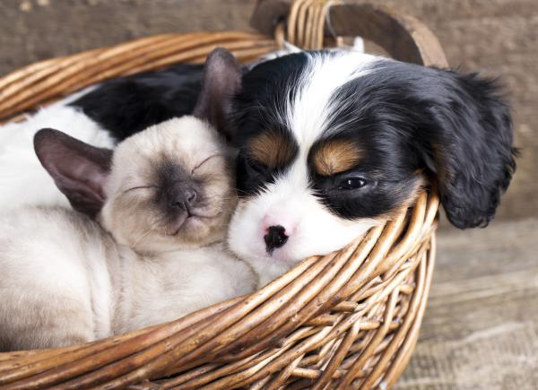

Bienvenido a Adopt2Love 🐾

En Adopt2Love creemos que cada perro y cada gato merece una segunda oportunidad. Adoptar no solo cambia la vida de un animal, también transforma la tuya. Frente a la compra de mascotas, la adopción es un acto de amor, responsabilidad y compromiso que ayuda a combatir el abandono y la sobrepoblación animal.
Miles de perros y gatos esperan en refugios y protectoras, llenos de cariño y listos para formar parte de una familia. Al adoptar, no solo le das un hogar a un compañero fiel, sino que también contribuyes a un mundo más justo para ellos. Cada adopción salva vidas: la del animal que adoptas y la de otro que podrá ser rescatado.
Aquí encontrarás animales increíbles, únicos y llenos de personalidad, esperando conocerte. Porque el mejor amigo no se compra… se adopta.
💙 Adopta. Ama. Cambia vidas.
Ayúdanos con tu donación 💙
En Adopt2Love trabajamos cada día para cuidar, proteger y encontrar un hogar a perros y gatos que lo necesitan. Todo esto es posible gracias a la ayuda de personas solidarias como tú.
Tus donaciones nos permiten ofrecer alimentación, atención veterinaria y un lugar seguro donde nuestros animales pueden esperar una nueva oportunidad.
🐾 Cada aporte, por pequeño que sea, marca la diferencia.
💙 Dona y ayúdanos a seguir salvando vidas.

También ayudamos a quienes ya no pueden cuidar de sus mascotas 🐾
En Adopt2Love entendemos que, a veces, las circunstancias cambian y cuidar de una mascota deja de ser posible. Si te encuentras en esta situación, no estás solo. Nuestro objetivo es ayudar tanto a los animales como a las personas, asegurando siempre el bienestar de cada perro y cada gato.
Contamos con una red de refugios que mantenemos gracias al apoyo de donaciones y al trabajo de voluntarios comprometidos. En estos espacios, ofrecemos cuidado, alimentación, atención veterinaria y, sobre todo, cariño a las mascotas mientras esperan encontrar un nuevo hogar.
Nuestro compromiso es darles una segunda oportunidad, acompañándolos durante todo el proceso hasta que encuentren una familia que los quiera para siempre. Porque cada historia merece un nuevo comienzo, y cada animal merece ser amado.
💙 Si no puedes seguir cuidando de tu mascota, nosotros te ayudamos a encontrarle un hogar lleno de amor.